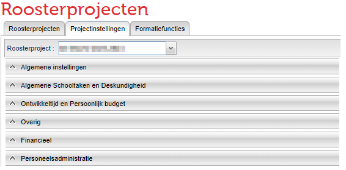
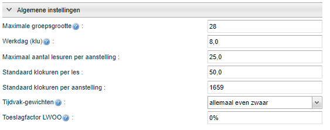
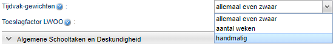
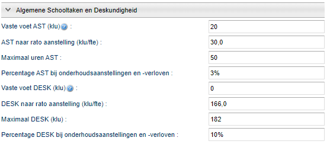
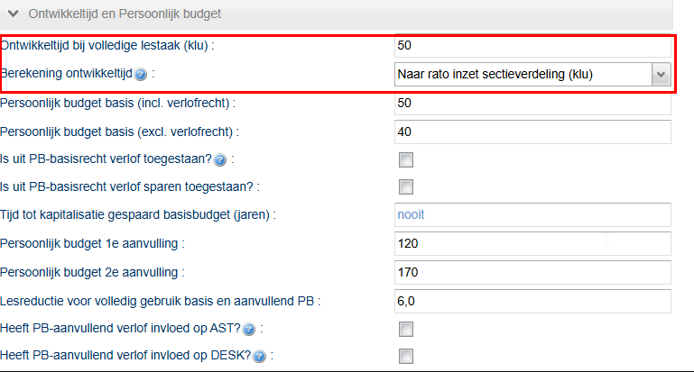
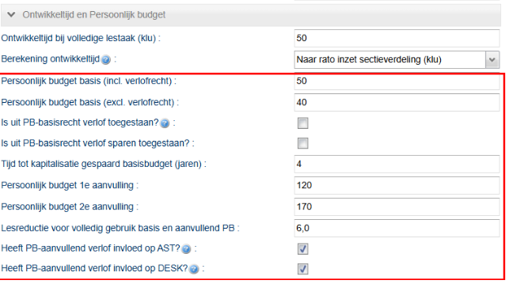
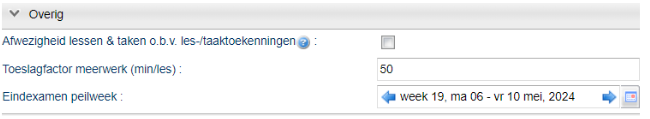
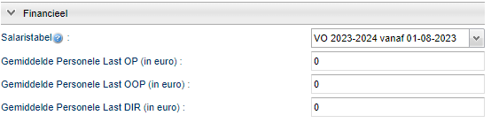
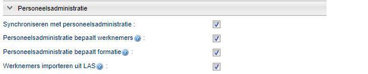
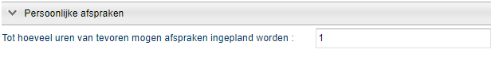

Projectinstellingen
De projectinstellingen
 Beheer > Roosterprojecten > Projectinstellingen
Beheer > Roosterprojecten > Projectinstellingen
Hier past u de instellingen voor uw roosterproject aan.

Algemene instellingen

Maximale groepsgrootte
Hier stelt u de standaard Maximale groepsgrootte in voor uw roosterproject en legt u de splitsingsnorm vast. Waar nodig maakt u bij Onderwijs > Geplande groepen groepsspecifieke aanpassingen. U kunt ook afdelingsspecifieke aanpassingen maken bij Onderwijs > Afdelingen.
Werkdag (klu)
Hier vult u het aantal klokuren in waarmee het portal rekent bij het verwerken van verlof. Dit is het aantal klu dat een werknemer opneemt voor een hele dag verlof.
Maximaal aantal lesuren per aanstelling
Dit is het maximaal aantal lessen dat een docent met een fulltime aanstelling geeft. Dit is gebaseerd op:
- het aantal minuten per les (schoolafhankelijk)
- de maximale lestaak in klokuren
- Het aantal lesweken per schooljaar gebaseerd op de dagennorm voortgezet onderwijs.
Wij hebben de standaardinstelling staan op maximaal 25 lesuren. U past dit hier eventueel handmatig aan.
Note
Voorbeeld: een school met 50-minutenlessen, 37,8 lesweken en een maximale lestaak van 750 klokuren heeft een maximaal aantal lessen van 24. Dit is als volgt berekend: 750 / ((50/60) x 37,8) = 24 lesuren.
Standaard klokuren per les
Dit wordt vaak de lesvergoeding genoemd en is gebaseerd op:
- het aantal minuten per les (schoolafhankelijk)
- de opslagfactor (schoolafhankelijk)
- Het aantal lesweken per schooljaar gebaseerd op de dagennorm voortgezet onderwijs.
Wij hebben de standaardinstelling staan op een lesvergoeding van 50 klu per les. U past dit hier eventueel handmatig aan.
Note
Voorbeeld: een school met 50-minutenlessen, een opslagfactor van 1,6 en 37,8 lesweken heeft een lesvergoeding van 50 uur. Dit is als volgt berekend: (50/60) x 1,6 x 37,8 = 50 klu.
De ingevulde lesvergoeding geldt voor alle geplande lessen. Onder het menu Onderwijs kunt u hier op verschillende niveau's van afwijken. Dit kan op:
* afdelingsniveau,
* vakniveau en
* lesniveau.
Standaard klokuren per aanstelling
Dit is de normbetrekking in de CAO-VO en bedraagt 1659 klokuren.
Tijdvak-gewichten
Hiermee regelt u de onderlinge verhouding van de tijdvakken. Wanneer u werkt met twee of meer tijdvakken kiest u voor één van de volgende mogelijkheden.
- Allemaal even zwaar: ongeacht het aantal lesweken in het tijdvak is de lesvergoeding in elk tijdvak hetzelfde.
- Aantal weken: het aantal weken in het tijdvak bepaalt de lesvergoeding van één les in het tijdvak.
- Handmatig: u bepaalt zelf de weging van de lesvergoeding voor één les per tijdvak. Het aantal lesweken heeft geen invloed.

Toeslagfactor LWOO
Het percentage dat u hier invoert heeft invloed op de leerlingen met een LWOO-indicatie. Een leerling met deze indicatie telt zwaarder mee bij het verwachte aantal leerlingen.
Algemene Schooltaken en Deskundigheid

Instellingen voor AST en DESK
De afspraken uit uw eigen taakbeleid over de algemene schooltaken (AST) en deskundigheidsbevordering (DESK) verwerkt u hier. Dit kan op verschillende manieren.
- Vaste voet: voor iedereen gelijk ongeacht de aanstelling (klu).
- Naar rato: afhankelijk van de betrekkingsomvang (klu/fte).
- Gestaffeld: deze vindt u bij Beheer > Roosterprojecten > Formatiefuncties.
Een combinatie van drie bovenstaande manieren is ook mogelijk.
Bij de projectinstellingen legt u eventueel een Maximaal uren AST en Maximaal DESK (klu) vast. Bij Personeel > Formatie > Planning aanstellingen** en verlof en Totaal** verschijnt een waarschuwing wanneer een werknemer dit maximum overschrijdt. De cel kleurt rood en wanneer u met uw cursor op de cel staat verschijnt een tooltip met meer informatie.
Ook kunt u een percentage vastleggen voor de AST en DESK in het geval van een onderhoudsaanstelling of -verlof. Bij een docent waar de aanstelling gedurende het schooljaar veranderd wordt dit percentage gebruikt voor berekening van de AST en DESK. Het percentage wordt bepaald door het maximaal aantal klokuren AST en DESK vanuit uw taakbeleid en de normbetrekking.
Note
Voorbeeld AST: een school heeft een maximaal uren AST van 50 klu. Dit is 3% van 1659 uur. Voorbeeld DESK: een school heeft een maximaal DESK van 166 klu. Dit is 10% van 1659 uur.
Ontwikkeltijd en Persoonlijk budget
Ontwikkeltijd
Ontwikkeltijd wordt op twee manieren berekend. U kiest zelf welke mogelijkheid u in het roosterproject gebruikt.
- Naar rato inzet sectieverdeling (klu): de ontwikkeltijd wordt gebaseerd op het aantal lessen die de docent geeft.
- Naar rato betrekkingsomvang totaal (fte): de ontwikkeltijd wordt gebaseerd op de betrekkingsomvang van de docent.

De ontwikkeltijd ziet u terug bij Personeel > Formatie > Planning aanstellingen en verlof in de kolom met dezelfde naam.
Instellingen voor Persoonlijk Budget

Wij hebben de standaardinstelling voor het PB ingevuld zoals in bovenstaande afbeelding. U past dit hier eventueel handmatig aan.
Er is een verschil tussen PB-basisrecht inclusief en exclusief verlofrech_t. Het _PB-basis excl. __verlofrecht wordt naar rato verminderd bij opname van PB-aanvullend verlof.
U bepaalt of het PB-basisrecht ingezet kan worden als verlof door dit aan te vinken.
Note
Vanaf de release in juni kunt u aangeven of sparen vanuit het PB-basisrecht is toegestaan. Als dit niet is toegestaan, dan worden uren opgemaakt vanuit het jaarrecht en dus niet eerst de oudere gespaarde uren die reeds in de spaarpot zitten.
Met de projectinstelling Tijd tot kapitalisatie gespaard basisbudget (jaren) geeft u aan na hoeveel jaar er gekapitaliseerd moet worden tegen het huidige uurloon. U kunt het aantal jaar aanpassen. Als u nooit wilt kapitaliseren laat u de cel leeg. In dat geval verschijnt het woord nooit.
In het geval van opname van het PB-aanvullend verlof geldt er een lesreductie. Standaard is hier (volgens de CAO) 6 lesuren ingevuld. Dit kan bij u op school afwijken door bijvoorbeeld een andere lesduur. Als dit het geval is vult u hier een ander getal in.
U bepaalt of de 1e/2e aanvulling van het PB-aanvullend verlof invloed heeft op de AST en DESK. Zodra u bij deze instellingen een vinkje plaatst wordt bij opname het aantal klu voor AST en DESK gereduceerd.
Het Persoonlijk budget ziet u terug bij Personeel > Persoonlijk budget.
Overig

Afwezigheid lessen & taken op basis van les-/taaktoekenningen
Het is mogelijk om het saldo van de onderhoudsverloven niet mee te nemen in de formatieberekening. Het afwezig melden van een docent heeft zo geen invloed op het eindsaldo op de formatiekaart. Indien een afwezigheid voor lessen en taken wél invloed heeft op het eindsaldo, dan zet u hier het vinkje aan.
Toeslagfactor meerwerk (min/les)
Deze projectinstelling geeft aan wat de vergoeding in minuten is voor een meerwerk-les. De toeslagfactor kent het portal toe op het op het moment dat het meerwerk het ingevoerde meerwerkquotum overstijgt. Dit stelt u in bij Beheer > Projectinstellingen > Formatiefuncties. Via Personeel > Lessenverdeling > Meerwerk en Docentdeelname ziet u welke lessen meetellen. U past dit hier eventueel handmatig aan. Incidentele vervangingen vanuit het dagrooster worden standaard geregistreerd als meerwerk.
Eindexamen peilweek
De peilweek voor de eindexamenvakken is instelbaar. Standaard staat deze op week 19, maar u kunt deze dus aanpassen naar een andere week.
Financieel

Salaristabel
De salaristabellen voegen wij elk schooljaar toe bij Beheer > Portal-inrichting > Salaristabellen. Welke salaristabel u gebruikt in elk schooljaar geeft u hier zelf aan. Wij adviseren u om te kiezen voor de salaristabel middeling (advies) van uw schooljaar.
Note
Welke salaristabellen zijn beschikbaar in het portal?
Van elke salarisverhoging is een tabel beschikbaar in het portal, maar ook is er een middelingstabel. In de middelingstabel wordt het gemiddelde salaris in een schooljaar bij een specifieke schaal en trede op basis van de in het schooljaar geldende salaristabellen berekend. Dit gemiddelde salaris ziet u terug bij Personeel > Financieel > Indicatie werkgeverskosten.
Gemiddelde Personele Last
Hier noteert u eventueel de Gemiddelde Personele Last (GPL) van uw OP, OOP en DIR. Dit doet u in euro's. Als u de salarisschaal en -trede bij Personeel > Financieel niet heeft ingevuld, dan rekent het portal op basis van de GPL de indicatie van werkgeverskosten uit. Meer informatie over de GPL vindt u op de overheidswebsite.
Personeelsadministratie

Voor ieder roosterproject geeft u aan of u de koppeling met de personeelsadministratie gebruikt. Meer informatie over het inrichten van de koppeling met AFAS vindt u op Voorbereiding koppeling AFAS.
Persoonlijke afspraken

Deze instelling gebruikt u om aan te geven dat werknemers een persoonlijke afspraak (bijvoorbeeld een overleg) mogen inplannen tot een x aantal uur van tevoren.